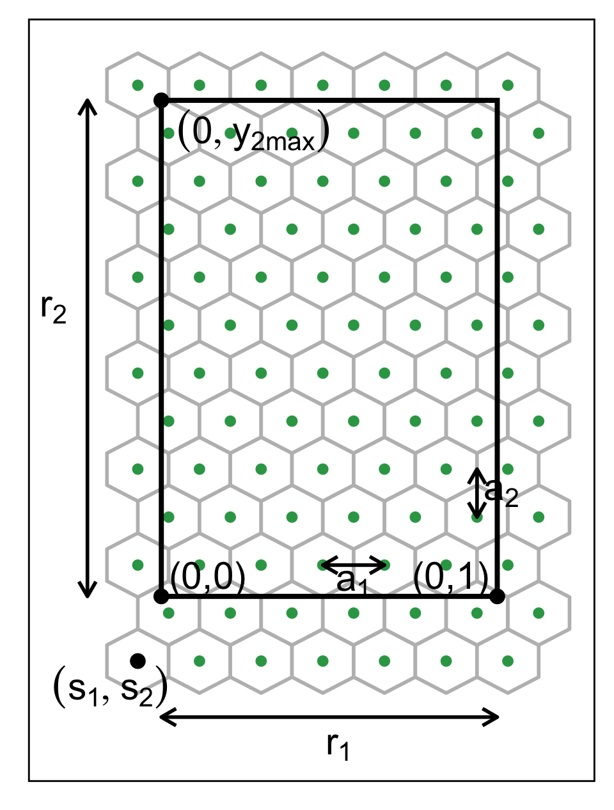
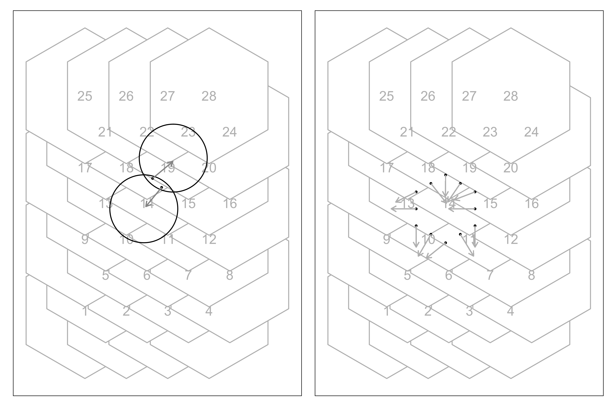

![]()

Appendix: Looking at Non-Linear Dimension Reductions as Models in the Data Space
Computing hexagon grid configurations
Given range of embedding component, \(r_2\), number of bins along the x-axis, \(b_1\), and buffer proportion, \(q\), hexagonal starting point coordinates, \(s_1 = -q\), and \(s_2 = -q \times r_2\). The purpose is to find width of the hexagon. \(a_1\), and number of bins along the y-axis, \(b_2\).
Geometric arguments give rise to the following constraints.
\(\text{min }a_1 \text{ s.t.}\)
\[ s_1 - \frac{a_1}{2} < 0, \tag{1}\]
\[ s_1 + (b_1 - 1) \times a_1 > 1, \tag{2}\]
\[ s_2 - \frac{a_2}{2} < 0, \tag{3}\]
\[ s_2 + (b_2 - 1) \times a_2 > r_2. \tag{4}\]
Since \(a_1\) and \(a_2\) are distances,
\[ a_1, a_2 > 0. \] Also, \((s_1, s_2) \in (-0.1, -0.05)\) as these are multiplicative offsets in the negative direction.
Equation 1 can be rearranged as,
\[ a_1 > 2s_1 \]
which given \(s_1 < 0\) and \(a_1 > 0\) will always be true. The same logic follows for Equation 3 and substituting \(a_2 = \frac{\sqrt{3}}{2}a_1\), and \(s_2 = -q \times r_2\) to Equation 3 can be written as,
\[ a_1 > -\frac{4}{\sqrt{3}}qr_2 \]
Also, substituting \(a_2 = \frac{\sqrt{3}}{2}a_1\), \(s_2 = -q \times r_2\) and rearranging Equation 4 gives:
\[ a_1 > \frac{2(r_2 + qr_2)}{\sqrt{3}(b_2 - 1)}. \tag{5}\]
Similarly, substituting \(s_1 = -q\) Equation 2 becomes,
\[ a_1 > \frac{(1 + q)}{(b_1 - 1)}. \tag{6}\]
This is a linear optimization problem. Therefore, the optimal solution must occur on a vertex. So, by setting Equation 5 equals to Equation 6 gives,
\[ \frac{2(r_2 + qr_2)}{\sqrt{3}(b_2 - 1)} = \frac{(1 + q)}{(b_1 - 1)}. \] After rearranging this,
\[ b_2 = 1 + \frac{2r_2(b_1 - 1)}{\sqrt{3}} \]
and since \(b_2\) should be an integer,
\[ b_2 = \Big\lceil1 +\frac{2r_2(b_1 - 1)}{\sqrt{3}}\Big\rceil. \tag{7}\]
Furthermore, with known \(b_1\) and \(b_2\), by considering Equation 2 or Equation 4 as the binding or active constraint, can compute \(a_1\).
If Equation 2 is active, then,
\[ \frac{(1 + q)}{(b_1 - 1)} < \frac{2(r_2 + qr_2)}{\sqrt{3}(b_2 - 1)}. \]
Rearranging this gives,
\[ r_2 > \frac{\sqrt{3}(b_2 - 1)}{2(b_1 - 1)}. \]
Therefore, if this equality is true, then \(a_1 = \frac{(1+q)}{(b_1 - 1)}\), otherwise, \(a_1 = \frac{2r_2(1+q)}{\sqrt{3}(b_2 - 1)}\).
Binning the data
Points are assigned to the bin they fall into based on the nearest centroid. If a point is equidistant from multiple centroids, it is assigned to the centroid with the lowest hexagonal bin ID.
